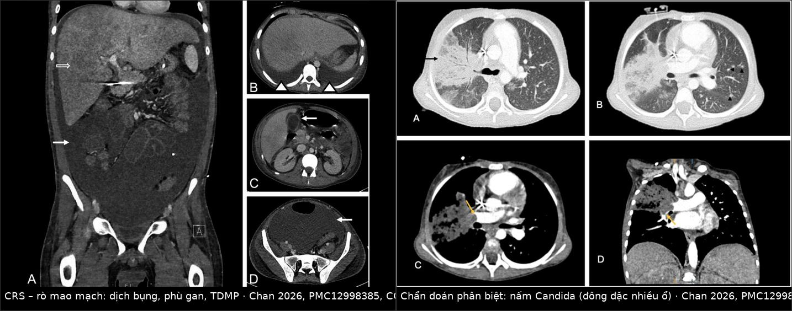
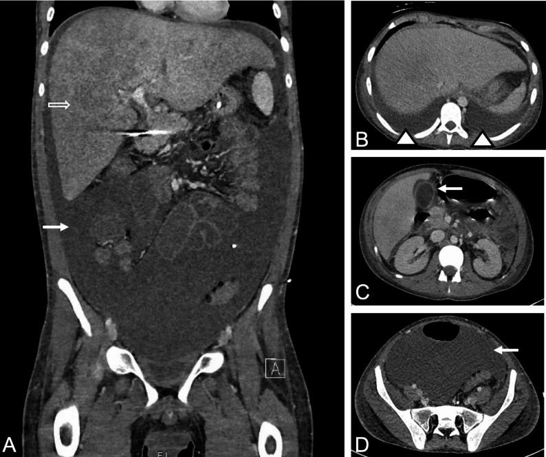
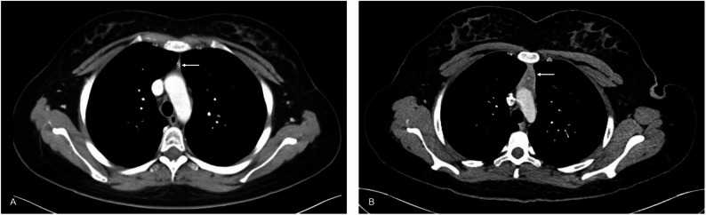
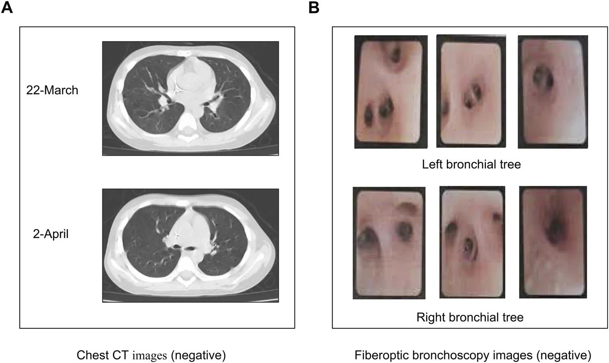

6165 — Phù phổi do phản ứng cytokine (CRS) sau CAR-T và blinatumomab ở trẻ / Cytokine release syndrome–associated pulmonary edema in children
Tags: pattern:phu-phoi pattern:go-khong-dong-nhat pattern:tran-dich-mang-phoi pattern:phu-tang vung:phoi vung:mang-phoi vung:trung-that protocol:X-quang-nguc protocol:CT-nguc protocol:sieu-am-tim score:ASTCT
Mức chắc chắn (certainty): tổng hợp y văn (literature synthesis) — số liệu lấy từ review hình ảnh CAR-T ở trẻ và người trẻ 2026 (Vasyliv, PMC12998385, 12 figure), review độc tính CRS/ICANS ở khoa hồi sức nhi 2022 (Baumeister, PMC8989409), review an toàn CAR-T ở B-ALL nhi 2025 (Li & Zheng, PMC12846953), ca blinatumomab gây tổn thương phổi ở trẻ 10 tuổi 2026 (Feng, PMC13731319), ca CRS độ nặng ở trẻ phải thở máy + CRRT 2026 (Alotaibi, PMC12903790) và meta-analysis blinatumomab ở trẻ 2022 (Marrapodi, PMC9354602). Không có thử nghiệm ngẫu nhiên riêng cho phù phổi do CRS; mọi ngưỡng điều trị là đồng thuận ASTCT/kinh nghiệm trung tâm, chỗ suy luận được ghi rõ.
Câu chốt: phù phổi trong CRS không phải viêm phổi và không phải phù phổi do tim — đó là rò mao mạch toàn thân (capillary leak) do bão cytokine. Trên CT, bộ ba tràn dịch màng phổi hai bên + dịch bụng + phù tạng đi cùng phổi ngấm thuốc bình thường cạnh dịch (xẹp phổi chứ không phải viêm) là dấu hiệu mạnh nhất phân biệt với nhiễm khuẩn (Vasyliv 2026). Ngược lại, CT ngực bình thường không loại trừ CRS: ca trẻ 10 tuổi giảm oxy máu sau hóa trị có CT và nội soi phế quản đều âm tính, đáp ứng với methylprednisolone (Feng 2026).
1. Tổng quan bệnh học – cơ chế hình ảnh (TẠI SAO lại phù phổi)
1.1 Cơ chế: bão cytokine → tổn thương nội mô → rò mao mạch
- Khởi phát: tế bào CAR-T (hoặc blinatumomab, một bispecific T-cell engager) gắn kháng nguyên trên tế bào B → hoạt hóa T hàng loạt → giải phóng IL-6, IFN-γ, TNF-α, IL-10. IL-6 là trung tâm của chuỗi này.
- Đích tổn thương là NỘI MÔ, không phải phế nang: cytokine hoạt hóa nội mô → mất lớp glycocalyx, tăng tính thấm mao mạch → dịch thoát vào khoang kẽ thứ ba. Vì vậy hình ảnh là phù kẽ + tràn dịch đa màng, chứ không phải đông đặc phế nang do vi khuẩn.
- TẠI SAO phổi bị trước: phổi có mao mạch phế nang với diện tích trao đổi lớn nhất cơ thể và áp lực keo thấp của tuần hoàn phổi; chỉ cần tăng tính thấm nhẹ là dịch đã tràn vào kẽ quanh phế quản–mạch → giảm oxy máu trước khi có mờ trên X-quang (đây là lý do "X-quang sạch mà SpO₂ tụt").
- TẠI SAO tim bình thường mà vẫn phù: cung lượng tim tăng, sức cản mạch hệ thống giảm, áp lực đổ đầy mao mạch phổi (PCWP) bình thường — nhưng CRS có thể kèm viêm cơ tim do cytokine làm suy tim thật; hai cơ chế có thể cùng tồn tại.
- Blinatumomab khác CAR-T ở đâu: CRS thường gặp ở chu kỳ đầu, giảm ở các chu kỳ sau, và có thể cắt bằng ngừng truyền → giảm liều → corticoid/tocilizumab (Baumeister 2022). Blinatumomab còn gây tổn thương phổi do thuốc (DIILD) — cùng hình ảnh, khác điều trị (corticoid, không phải tocilizumab).
1.2 Vật lý hình ảnh: mỗi mẫu hình là một mức dịch
- Mờ kính mờ (ground-glass, GGO): dịch trong kẽ làm dày vách phế nang nhưng khí còn trong phế nang → đậm độ −300 đến −600 HU; phế quản vẫn chứa khí.
- Đông đặc (consolidation): phế nang đầy dịch → +30 đến +60 HU, thấy phế quản hơi (air bronchogram). Trong CRS, đông đặc thường hai bên, vùng thấp, đối xứng — không có phân thùy.
- Dày vách tiểu thùy (smooth septal thickening): dịch ở vách → đường mờ nhẵn, khác dày nốt (nodular) của carcinomatosis hay dày không đều của xơ phổi.
- Tràn dịch màng phổi: dịch 0–20 HU (nước) — không cản quang, khác máu 35–70 HU; phân bố hai bên, không kèm dày màng phổi.
- Dịch bụng + phù gan: gan to, giảm đậm độ lan tỏa (phù nhu mô), dịch tự do quanh gan/lách — dấu hiệu rò mao mạch hệ thống, không phải suy gan.
- Nhiễm khuẩn thì khác: đông đặc một thùy/từng ổ, có phế quản hơi trong khối đặc, đôi khi hang/nốt, không có dịch bụng; nấm Candida cho đông đặc nhiều ổ + nốt nhỏ (ảnh trong mục 3).
1.3 Ngưỡng định lượng bắt buộc nhớ
| Đại lượng | Ngưỡng / con số | Nguồn |
|---|---|---|
| CRS độ 3–4 (các liệu pháp CAR-T nói chung) | 10–30% | Vasyliv 2026, PMC12998385 |
| CRS nặng (≥ độ 3) ở trẻ dùng CD19 CAR-T | 22–46% (ICANS 13–31%) | Li & Zheng 2025, PMC12846953 |
| Thời điểm khởi phát CRS | trong 2 tuần đầu sau truyền | Vasyliv 2026 |
| CRS kèm HLH/MAS (CarHLH) | ferritin > 100.000 µg/L + ≥ 2 tiêu chí (transaminase/bilirubin ≥ độ 3, creatinine ≥ độ 3, phù phổi ≥ độ 3, thực bào tủy) | Baumeister 2022 |
| Ferritin đỉnh | 130.000 ng/mL (CRS độ 4–5) vs 8.290 ng/mL (độ 0–3) | Baumeister 2022 |
| CRP đỉnh | 22,9 mg/dL (độ 4–5) vs 16,2 mg/dL (độ 0–3) | Baumeister 2022 |
| Tocilizumab | < 30 kg: 12 mg/kg; ≥ 30 kg: 8 mg/kg; tối đa 3–4 liều, cách 8 giờ | Baumeister 2022 |
| Corticoid | methylprednisolone 1–2 mg/kg mỗi 6–12 giờ hoặc dexamethasone 0,5–1 mg/kg (tối đa 10 mg) mỗi 6 giờ | Baumeister 2022 |
2. Mẫu hình + chẩn đoán phân biệt theo vị trí (gamut)
Mẫu hình chung: trẻ sốt + tụt áp + giảm oxy máu trong 14 ngày sau truyền CAR-T/blinatumomab → mờ phổi hai bên + tràn dịch đa màng + dịch bụng, tim không to.
| Vị trí / mẫu hình | Gamut theo bối cảnh |
|---|---|
| Phổi hai bên, vùng thấp (GGO → đông đặc) | CRS rò mao mạch · viêm phổi do vi khuẩn/nấm/PJP · phù phổi do tim (viêm cơ tim CRS) · xuất huyết phổi (giảm tiểu cầu) · TRALI/TACO sau truyền máu · DIILD do blinatumomab/hóa trị |
| Màng phổi (dịch hai bên, không dày màng phổi) | CRS · phù phổi do tim · TRALI/TACO · ít gặp: lao màng phổi (thường một bên, dày màng phổi) |
| Ổ bụng (dịch tự do + gan to giảm đậm độ) | CRS rò mao mạch · quá tải dịch do hồi sức · tắc tĩnh mạch gan · nhiễm trùng ổ bụng (có khí/dày thành ruột) |
| Trung thất trước (khối mới) | Tuyến ức phục hồi sau CAR-T (ngày +52, bờ nhẵn, ngấm đều) · tái phát u · u lympho · nhiễm trùng trung thất |
| Mô dưới da (phù, khí) | Phù do rò mao mạch · khí dưới da do thủ thuật/thở máy (xem bài 649) · viêm mô tế bào |
| Phổi "sạch" nhưng giảm oxy máu | CRS sớm / DIILD · thuyên tắc phổi · shunt · thiếu máu nặng · tổn thương phổi do thuốc |
3. Bảng so sánh phân biệt (ma trận đối chiếu)
| Thực thể (entity) | Hình ảnh điển hình | Chốt vào (rule-in) | Chốt loại (rule-out) | Gợi ý xác nhận |
|---|---|---|---|---|
| CRS – rò mao mạch | GGO/đông đặc hai bên vùng thấp + tràn dịch màng phổi hai bên + dịch bụng + phù tạng | Dịch ở ≥ 2 khoang (màng phổi + bụng) cùng lúc, tim không to, xuất hiện ≤ 14 ngày sau truyền | Không có dịch ngoài phổi, có đông đặc một thùy hoặc hang → nghĩ nhiễm | Lâm sàng ASTCT + IL-6/CRP/ferritin; đáp ứng tocilizumab |
| Viêm phổi vi khuẩn | Đông đặc một thùy/từng ổ, phế quản hơi, có thể tràn dịch một bên | Đông đặc khu trú, không dịch bụng, procalcitonin cao | Đông đặc đối xứng hai bên + dịch đa màng → không điển hình vi khuẩn | Cấy máu/đờm, BAL; kháng sinh |
| Nấm Candida (muộn) | Đông đặc nhiều ổ + nốt nhỏ, có phế quản hơi; thường > 1 tháng sau CAR-T | Sốt dai dẳng + cấy nấm dương, tổn thương nhiều ổ rời rạc | Tổn thương đối xứng + dịch bụng → không phải nấm | Cấy máu, (1,3)-β-D-glucan, BAL |
| PJP | GGO hai bên quanh rốn, có thể kén khí; thường sau giảm ức chế miễn dịch kéo dài | GGO + kén khí + LDH cao, không dịch bụng | Có dịch đa màng + phù tạng → nghĩ CRS | PCR BAL, nhuộm Grocott |
| Phù phổi do tim (viêm cơ tim CRS) | Tim to, phù quanh rốn, tái phân bố mạch máu, dịch màng phổi | BNP/NT-proBNP cao, EF giảm, tĩnh mạch cổ nổi | EF bình thường + dịch bụng nhiều → nghi rò mao mạch | Siêu âm tim tại giường |
| TRALI/TACO | Phù phổi trong 6 giờ sau truyền chế phẩm máu | Bối cảnh truyền máu, kháng thể HLA (TRALI), đáp ứng lợi tiểu (TACO) | Không truyền máu trong 6 giờ → loại | Ngừng truyền, NT-proBNP, báo cáo huyết học |
| DIILD do blinatumomab/hóa trị | GGO/đông đặc hai bên, có thể CT bình thường | Bắt đầu sau thuốc, loại trừ nhiễm (mNGS/BAL âm), đáp ứng corticoid | Đáp ứng tocilizumab nhanh + tăng IL-6 → nghi CRS hơn | Ngừng thuốc, corticoid, HRCT lặp lại |
| Xuất huyết phổi | Mờ lan tỏa/đông đặc + giảm Hb đột ngột, tiểu cầu rất thấp | Hb giảm + tiểu cầu < 20 G/L, ho ra máu | Mờ đối xứng + Hb ổn định → loại | CT, nội soi phế quản nếu cần |
| Tuyến ức phục hồi | Khối trung thất trước, bờ nhẵn, ngấm thuốc đều, xuất hiện sau ngày +28 | Hình dạng tuyến ức, không xâm lấn, không hạch | Bờ tua, xâm lấn, hạch trung thất → nghi tái phát | So sánh CT cũ, PET/CT nếu không chắc |

- Trái: CRS — dịch bụng lượng lớn, gan to giảm đậm độ (phù), tràn dịch màng phổi hai bên; phổi cạnh dịch ngấm thuốc bình thường = xẹp phổi, không phải viêm.
- Phải: nấm Candida lan tỏa — đông đặc nhiều ổ rời rạc có phế quản hơi, không có dịch bụng; xuất hiện 10 tháng sau CAR-T.
4. Protocol chụp + hệ phân độ ASTCT + xử trí
4.1 Protocol
- Bước 1 — X-quang ngực tại giường (AP): rẻ, nhanh, đủ để phát hiện tràn dịch/đông đặc lớn; không đủ để loại trừ phù kẽ sớm.
- Bước 2 — siêu âm phổi tại giường: B-line ≥ 3/ô và dày màng phổi > 3 mm gợi ý phù kẽ, dùng để theo dõi hằng ngày không bức xạ (suy luận từ sinh lý, chưa có ngưỡng riêng cho CRS).
- Bước 3 — CT ngực: không thường quy; chỉ khi cần phân biệt nhiễm khuẩn/nấm, xuất huyết, thuyên tắc phổi hoặc trước can thiệp. Dùng liều thấp (low-dose), không cản quang; thêm cản quang nếu nghi thuyên tắc/viêm cơ tim.
- Bước 4 — siêu âm tim (bắt buộc khi tụt áp/giảm oxy): loại phù phổi do tim, tìm viêm cơ tim CRS (EF giảm, dày thành).
- Theo dõi: cân nặng 2 lần/ngày, cân bằng dịch vào–ra mỗi 8 giờ, SpO₂, lactat; không dùng cân nặng làm chuẩn duy nhất vì dịch còn trong khoang thứ ba.
4.2 Phân độ ASTCT (CRS) — ngưỡng oxy quyết định độ
| Độ | Sốt | Tụt áp | Giảm oxy máu |
|---|---|---|---|
| 1 | ≥ 38 °C | Không | Không |
| 2 | ≥ 38 °C | Không cần vận mạch | Canula ≤ 6 L/phút hoặc thở blow-by |
| 3 | ≥ 38 °C | Cần 1 vận mạch ± vasopressin | HFNC > 6 L/phút, mặt nạ, non-rebreather, Venturi |
| 4 | ≥ 38 °C | Cần nhiều vận mạch | CPAP/BiPAP/đặt nội khí quản |
flowchart TD
A["Sốt ≥ 38 °C trong 14 ngày sau truyền CAR-T"] --> B{"Tụt áp hoặc cần oxy?"}
B -->|"Không"| C["CRS độ 1: cấy máu, theo dõi sát, chưa dùng tocilizumab"]
B -->|"Có"| D{"Mức hỗ trợ oxy"}
D -->|"Canula ≤ 6 L/phút"| E["CRS độ 2: tocilizumab, cân nhắc corticoid"]
D -->|"HFNC > 6 L/phút hoặc mặt nạ"| F["CRS độ 3: tocilizumab + corticoid + ICU"]
D -->|"CPAP, BiPAP, đặt NKQ"| G["CRS độ 4: ICU, thở máy, tocilizumab + corticoid ± anakinra/emapalumab"]
E --> H["Đánh giá lại 8 giờ: ferritin, CRP, dịch vào-ra"]
F --> H
G --> H
4.3 Xử trí có ngưỡng
- Tocilizumab: 12 mg/kg nếu < 30 kg, 8 mg/kg nếu ≥ 30 kg, lặp mỗi 8 giờ, tối đa 3–4 liều; dùng khi CRS độ ≥ 2 kéo dài hoặc độ ≥ 3.
- Corticoid: methylprednisolone 1–2 mg/kg mỗi 6–12 giờ hoặc dexamethasone 0,5–1 mg/kg (tối đa 10 mg) mỗi 6 giờ — thêm khi không đáp ứng liều tocilizumab đầu.
- Dịch: nguyên tắc hạn chế — rò mao mạch làm dịch vào khoang thứ ba, truyền nhiều làm phù phổi nặng thêm; ưu tiên vận mạch để giữ huyết áp, dùng lợi tiểu khi đã quá tải (suy luận sinh lý, không phải khuyến cáo có ngưỡng).
- Kháng sinh: cấy máu trước khi dùng tocilizumab; sốt đơn thuần không loại trừ nhiễm khuẩn huyết.
- Điều trị bắc cầu khi thất bại: anakinra (đối kháng IL-1) và emapalumab (đối kháng IFN-γ) đã được dùng cho CRS độ cao kháng trị ở trẻ (Alotaibi 2026; Zhang 2026, PMC12996094).
5. Biến thể bình thường và cạm bẫy
- Tuyến ức phục hồi (thymic rebound): sau CAR-T, tuyến ức to lên ở ngày +52, bờ nhẵn, ngấm thuốc đều, không xâm lấn — lành tính, không phải tái phát. Cạm bẫy: gọi là u trung thất rồi sinh thiết/mổ oan.
- Xẹp phổi cạnh dịch: phổi cạnh tràn dịch ngấm thuốc bình thường (không tăng đậm độ) → xẹp phổi, không phải viêm phổi; cho kháng sinh là điều trị sai hướng.
- CT bình thường không loại trừ CRS/DIILD: ca trẻ 10 tuổi giảm oxy máu, CT ngực 2 lần và nội soi phế quản đều âm tính, mNGS âm, đáp ứng methylprednisolone → chẩn đoán DIILD, không phải CRS (Feng 2026). Chẩn đoán CRS là lâm sàng, hình ảnh chỉ để loại trừ.
- Nhiễm muộn sau CAR-T: Candida có thể xuất hiện 10 tháng sau truyền khi đã giảm ức chế miễn dịch — không được gọi là CRS.
- Blinatumomab ≠ CAR-T: cùng hình ảnh nhưng CRS do blinatumomab thường chu kỳ đầu, xử trí ngừng truyền/giảm liều trước, và DIILD do blinatumomab đáp ứng corticoid, không phải tocilizumab.
- Bẫy truyền dịch: tụt áp do rò mao mạch không đáp ứng bằng dịch như sốc giảm thể tích; truyền nhanh nhiều lít → phù phổi nặng thêm.
- Bẫy "tìm kiếm thỏa mãn": thấy đông đặc là dừng ở "viêm phổi" mà bỏ dịch bụng + phù gan — hai dấu hiệu chỉ điểm rò mao mạch hệ thống.
6. Tự lượng giá — Blind Quiz ngay trên trang tĩnh
Ca 1 — trẻ 16 tuổi B-ALL tái phát, ngày 12 sau CAR-T, bụng to nhanh, khó thở

- Gợi ý lâm sàng: sốt, tụt áp nhẹ, tăng cân 3 kg trong 2 ngày, SpO₂ 91% khí trời.
- Câu hỏi: Mô tả 3 bất thường? Vì sao phổi cạnh dịch không bị gọi là viêm? Chẩn đoán và bước điều trị đầu tiên?
Bấm để hiện đáp án (findings + chẩn đoán)
- Dấu hiệu: (A) dịch bụng lượng lớn + gan to, giảm đậm độ lan tỏa (phù gan); (B) tràn dịch màng phổi hai bên; (C,D) dịch tự do trong khung chậu/lách.
- Vì sao không phải viêm phổi: phổi cạnh dịch ngấm thuốc bình thường, mờ chỉ do xẹp phổi — không có đông đặc khu trú, không có phế quản hơi trong khối đặc.
- Chẩn đoán: CRS độ 2–3 với rò mao mạch toàn thân — vì dịch xuất hiện ở ≥ 2 khoang cùng lúc, tim không to, trong 14 ngày sau truyền.
- Điều trị: tocilizumab 8 mg/kg (≥ 30 kg) ± corticoid, hạn chế dịch, theo dõi cân bằng dịch.
- Nguồn ảnh: Vasyliv et al., Cancer Imaging 2026, PMC12998385, Fig. 6 — CC BY 4.0.
Ca 2 — trẻ 16 tuổi, ngày +52 sau CAR-T, chụp CT ngực kiểm tra, không triệu chứng

- Gợi ý lâm sàng: xét nghiệm tế bào học tủy âm tính, không sốt, không sụt cân.
- Câu hỏi: Khối trung thất trước là gì? Cần sinh thiết không? Dấu hiệu nào giúp phân biệt với tái phát?
Bấm để hiện đáp án (findings + chẩn đoán)
- Dấu hiệu: (A) trước điều trị mô tuyến ức nhỏ; (B) ngày +52 tuyến ức to lên, bờ nhẵn, ngấm thuốc đồng nhất, không xâm lấn mỡ trung thất.
- Chẩn đoán: tuyến ức phục hồi sau CAR-T (thymic rebound) — lành tính.
- Không sinh thiết nếu điển hình; so sánh phim cũ và theo dõi. Nghi tái phát khi bờ tua, xâm lấn, hạch trung thất, tăng FDG không đồng nhất.
- Nguồn ảnh: Vasyliv et al., Cancer Imaging 2026, PMC12998385, Fig. 10 — CC BY 4.0.
Ca 3 — trẻ 10 tuổi B-ALL, ngày 11 sau hóa trị CAT, khó thở tăng dần, SpO₂ 88%

- Gợi ý lâm sàng: không sốt, không tụt áp; nghe phổi có ran ẩm; kháng sinh không đỡ, không có ổ nhiễm rõ.
- Câu hỏi: Hình ảnh có gì? Nếu CT bình thường thì loại trừ được gì? Chẩn đoán khả năng và điều trị?
Bấm để hiện đáp án (findings + chẩn đoán)
- Dấu hiệu: (A) CT ngực 2 thời điểm đều không có tổn thương; (B) nội soi phế quản bình thường, không có viêm/loét.
- Loại trừ được: viêm phổi do vi khuẩn, tổn thương đường thở lớn, u xâm lấn — nhưng KHÔNG loại trừ CRS/DIILD.
- Chẩn đoán: tổn thương phổi do thuốc (DIILD) sau hóa trị, đã loại nhiễm bằng mNGS âm; đáp ứng methylprednisolone + HFNC.
- Bài học: giảm oxy máu + CT sạch = nghĩ rò mao mạch/tổn thương kẽ sớm, không được trấn an bằng "CT bình thường".
- Nguồn ảnh: Feng et al., Front Pharmacol 2026, PMC13731319, Fig. 1 — CC BY 4.0.
Bài liên quan chéo
- 1430 – Độc tính thần kinh sau CAR-T (ICANS)
- 1440 – Hội chứng Parkinson do MNT sau CAR-T BCMA
- 033 – Phù phổi & ARDS
- 1788 – Viêm phổi do PJP không HIV
- 1826 – Viêm phổi do thuốc ức chế mTOR
Ảnh
6165_phu-phoi-crs_CT-bung_PMC12998385-f6.jpg— CRS: dịch bụng, phù gan, tràn dịch màng phổi (Vasyliv 2026, PMC12998385, Fig. 6, CC BY 4.0).6165_phu-phoi-crs_CT_f10-PMC12998385.jpg— tuyến ức phục hồi ngày +52 (Vasyliv 2026, Fig. 10, CC BY 4.0).6165_phu-phoi-crs_CT_f12-PMC12998385.jpg— nấm Candida lan tỏa, đông đặc nhiều ổ (Vasyliv 2026, Fig. 12, CC BY 4.0).6165_phu-phoi-crs_CT-PMC13731319-f1.jpg— CT ngực bình thường + nội soi phế quản bình thường trong ca giảm oxy máu (Feng 2026, PMC13731319, Fig. 1, CC BY 4.0).composite_crs_ro-mao-mach_vs_nhiem.jpg— ảnh ghép đối chiếu CRS (Fig. 6) vs nấm Candida (Fig. 12), tạo bằngtools/make_composite.py, nguyên bản không crop/kéo giãn.
Không dùng để chẩn đoán độc lập khi chưa có người hướng dẫn.